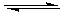

These two conformational structures are the result of chair-chair interconversions, and are both chiral. The configuration shown here is (S,S), and the (R,R) enantiomer has mirror image structures. The spacefilling renderings show how an axial (A) chlorine is crowded by the two axial hydrogens on the same side of the ring, whereas, an equatorial (E) chlorine is much less crowded. Consequently, the diaxial conformer on the right is much less stable than its diequatorial partner. The latter dominates the conformational equilibrium. These models can be moved about by clicking on the structure and dragging the mouse. Holding the shift key during this operation allows zooming.
